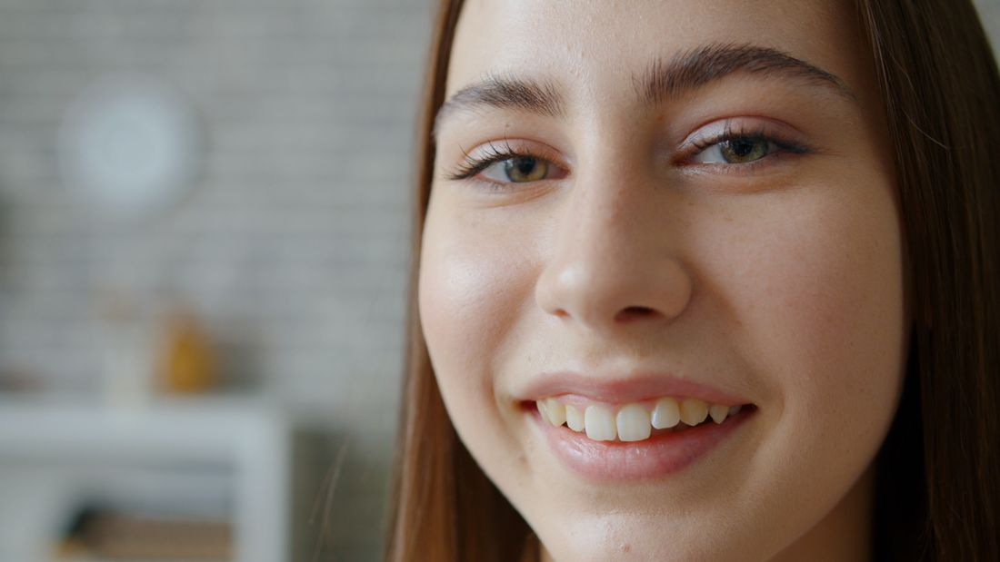

التقويم الشفاف (الألاينرز)
قوالب شفافة غير مرئية تقريباً، قابلة للإزالة ومريحة — لتعديل الأسنان دون التأثير على مظهركِ اليومي.
تقويم شفّاف بتقنية المسح الثلاثي الأبعاد، خطة علاج مصمّمة خصيصاً لكِ، ونتائج طبيعية تليق بكِ — في عيادة الدكتورة نادين عطاري بالشميساني.

أربع خطوات واضحة من الاستشارة الأولى حتى الابتسامة النهائية — مدروسة ومريحة من البداية.
فحص شامل ومسح رقمي دقيق لأسنانكِ لبناء صورة كاملة عن حالتكِ.
محاكاة رقمية للنتيجة المتوقعة وخطة علاج مصمّمة خصيصاً لتناسبكِ.
قوالب شفافة مريحة وغير مرئية تقريباً، مع متابعة دورية لتقدّم العلاج.
تكشف عن ابتسامة متناسقة وطبيعية، مع تثبيت يحافظ على النتيجة.
كل خدمة مبنية على تشخيص دقيق وخبرة في تقويم وتجميل الأسنان لنتائج تدوم.
قوالب شفافة غير مرئية تقريباً، قابلة للإزالة ومريحة — لتعديل الأسنان دون التأثير على مظهركِ اليومي.
حلول تقويم متكاملة للحالات المختلفة، باستخدام أحدث الأنظمة لتصحيح الإطباق وتراصف الأسنان.
تخطيط رقمي يحاكي ابتسامتكِ النهائية قبل البدء، لنتيجة متناسقة تليق بملامح وجهكِ.
مسح ثلاثي الأبعاد دقيق يوفّر تشخيصاً واضحاً وخطة علاج مبنية على بيانات حقيقية لحالتكِ.
تبييض، فينير ولمسات تجميلية دقيقة لإكمال الابتسامة بعد التقويم، بمظهر طبيعي ومتألق.
متابعة دورية منظّمة خلال العلاج، وثبّاتات تحافظ على ابتسامتكِ الجديدة لأطول فترة ممكنة.

بيئة مريحة ومجهّزة بأحدث التقنيات، تجمع بين الدقة الطبية والإحساس بالرعاية — لتكون رحلتكِ نحو ابتسامة جديدة سهلة وواضحة في كل خطوة.
نماذج توضيحية لمراحل التقويم الشفاف وتصميم الابتسامة تعكس أسلوب عملنا.


الصور نماذج توضيحية وليست لمرضى حقيقيين. لمشاهدة محتوى العيادة الحقيقي، تابعينا عبر رابط الحسابات.
تقييم 5.0 على خرائط جوجل من تجارب حقيقية في العيادة.
تجربة مريحة من أول استشارة. شرحت لي الدكتورة نادين كل خطوة بوضوح وكانت النتيجة أفضل مما توقعت. التقويم الشفاف فعلاً غير ملحوظ.
عيادة نظيفة ومرتّبة والتعامل راقٍ جداً. المتابعة كانت منتظمة وحسّيت إني بإيدين أمينة طوال فترة العلاج. أنصح فيها بشدة.
المسح الثلاثي الأبعاد خلاني أشوف شكل ابتسامتي قبل ما أبدأ، وهاد طمّنني كثير. النتيجة طبيعية وأنيقة. شكراً للدكتورة وطاقمها.
احجزي استشارتكِ اليوم ودعينا نصمّم لكِ خطة تقويم شفّاف تناسب ابتسامتكِ وأسلوب حياتكِ.